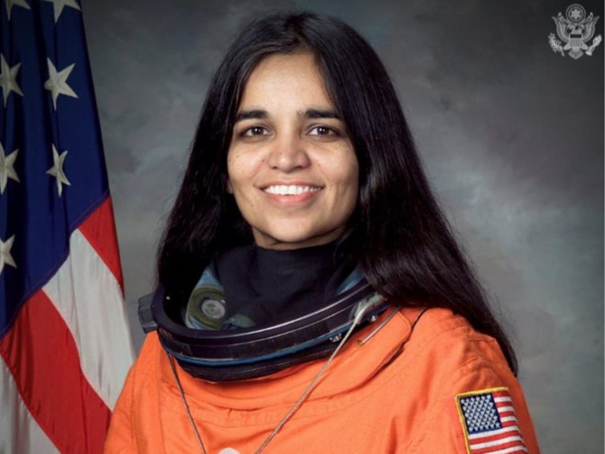

"Kalpana Chawla" was an Indian-born American astronaut and aerospace engineer who was the first woman of Indian origin to fly to space. She first flew on Space Shuttle Columbia in 1997 as a mission specialist and primary robotic arm operator aboard

"Pusarla Venkata Sindhu" (born 5 July 1995)is an Indian badminton player. Considered one of India's most successful sportspersons, Sindhu has won medals at various tournaments such as the Olympics and on the BWF circuit, including a gold at the 2019 World Championships. She is the first and only Indian to become the badminton world champion and only the second individual athlete from India to win two consecutive medals at the Olympic Games.

"Arunima Sinha" is an Indian mountaineer and sportswoman. She is the world's first female amputee to scale Mount Everest (Asia), Mount Kilimanjaro (Africa), Mount Elbrus (Europe), Mount Kosciuszko (Australia), Aconcagua (South America), Denali (North America) and Vinson Massif (Antarctica). She is also a seven time Indian volleyball player

"Anandibai Gopalrao Joshi"(31 March 1865 – 26 February 1887) was the first Indian female doctor of western medicine. She was the first woman from the erstwhile Bombay presidency of India to study and graduate with a two-year degree in western medicine in the United States.[1] She was also referred to as Anandibai Joshi and Anandi Gopal Joshi (where Gopal came from Gopalrao, her husband's first name).

"Pilavullakandi Thekkeparambil Usha"(born 27 June 1964) is an Indian sports administrator and retired track and field athlete. Usha was born in Koothali near Perambra in Kozhikode district, Kerala. She grew up in Payyoli. Usha has been associated with Indian athletics since 1979.[6] She has won 4 gold medals and 7 silver medals in the Asian Games. She is often associated as the "Queen of Indian track and field"